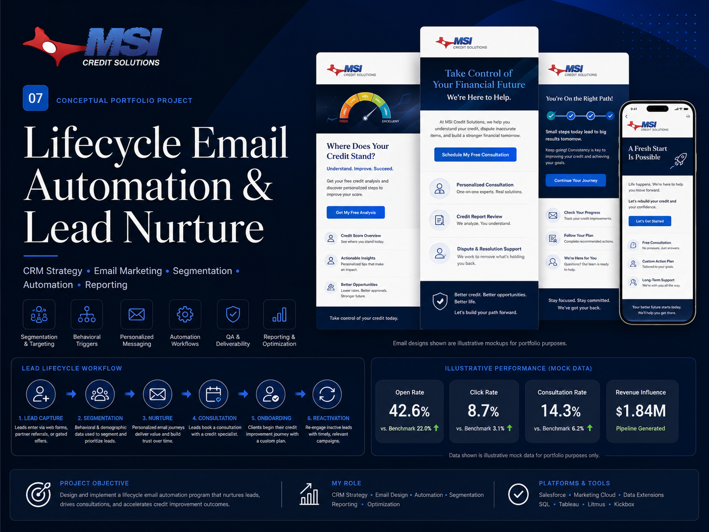
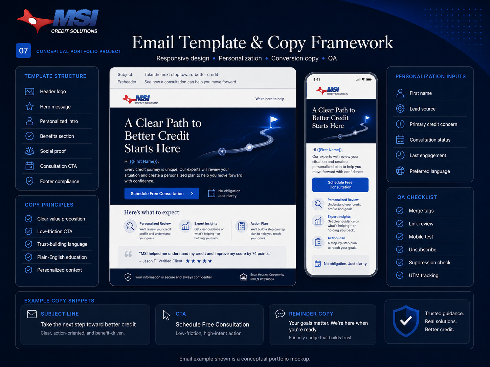
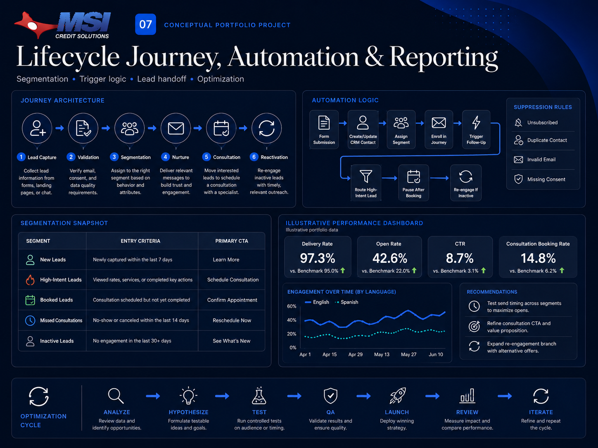

MSI Credit Lifecycle Email Automation & Lead Nurture

Lifecycle email strategy, segmentation, automation, and reporting presented for portfolio review.
Project overview
Lifecycle marketing as a connected system.
This project demonstrates my work supporting structured lifecycle marketing and lead-nurture planning for MSI Credit Solutions. The campaign connects website lead capture, CRM segmentation, automated email communication, consultation conversion, customer onboarding, and inactive-lead reactivation.
The project is designed to show the complete workflow behind lifecycle marketing rather than a collection of isolated email designs.
The challenge
Different leads need different journeys.
Credit-repair leads may enter the funnel with different concerns, levels of urgency, and readiness to speak with a specialist. A single generic email sequence would not provide enough relevance. The campaign needed a system that could respond to lead behavior, organize contacts inside the CRM, deliver useful education, support consultation booking, and re-engage inactive contacts.
My role
I supported lifecycle strategy, customer journey, segmentation framework, automated trigger logic, email messaging structure, quality-assurance process, and reporting approach.
Lifecycle Marketing
CRM Strategy
Email Automation
Lead Nurturing
Segmentation
Campaign QA
A/B Testing
Performance Reporting
Email template & copy framework
Responsive email built for clarity.

Responsive email framework showing content hierarchy, personalization inputs, conversion copy, mobile design, and quality-assurance considerations.
Template Structure
branded header
clear hero message
personalized introduction
educational value
consultation CTA
trust-building content
compliant footer
mobile-responsive layout
Copy Strategy
clear and supportive language
educational rather than fear-based messaging
low-friction consultation CTA
personalized content based on CRM data
plain-English explanations
concise mobile-friendly copy
Example copy block
Subject line: Take the next step toward better credit
Preheader: See how a consultation can help you move forward.
Headline: A Clear Path to Better Credit Starts Here
CTA: Schedule Free Consultation
Copy examples are formatted for portfolio presentation.
Lifecycle journey & automation workflow
From lead capture to optimization.

Journey architecture showing lead capture, CRM validation, segmentation, nurturing, consultation conversion, reactivation, and performance optimization.
Lead Capture→Data Validation→CRM Segmentation→Journey Enrollment→Email Nurture→Consultation Booking→Sales Handoff→Onboarding→Reactivation→Reporting and Optimization
Lead capture & CRM data
Personalization without sensitive exposure.
The workflow begins when a prospective customer submits a form through a landing page, website, or consultation funnel. The CRM record captures the information required to personalize communication and determine the appropriate journey.
first name
email address
phone number
lead source
primary credit concern
preferred contact method
preferred language
consultation status
consent status
last engagement date
lifecycle stage
Segmentation framework
CRM segments with clear intent.
Segment
Entry Criteria
Message Focus
Primary CTA
New Leads
Submitted an inquiry within the last seven days
Trust, education, and next steps
Schedule Consultation
High-Intent Leads
Clicked consultation content or visited the booking page
Address questions and reduce friction
Complete Booking
Booked Leads
Scheduled an upcoming consultation
Preparation and reminders
View Appointment
Missed Consultations
Appointment passed without completion
Easy rescheduling
Reschedule Consultation
Inactive Leads
No meaningful engagement within the defined period
Relevant education and renewed value
Restart Your Journey
Active Customers
Currently in onboarding or service
Progress, expectations, and continued support
View Next Steps
Automated email journey
A sequence designed around behavior.
Email 1
Inquiry Confirmation
Timing: Immediately after form submission
Purpose: Confirm receipt and explain the next step.
Email 2
Understanding Your Credit Situation
Timing: Day 2
Purpose: Provide educational content based on the lead’s primary concern.
Email 3
How the Process Works
Timing: Day 4
Purpose: Set expectations and explain the customer journey.
Email 4
Consultation Invitation
Timing: Triggered by engagement or booking-page activity
Purpose: Encourage the lead to schedule a consultation.
Email 5
Consultation Reminder
Timing: Before the scheduled consultation
Purpose: Reduce missed appointments.
Email 6
Missed Consultation Follow-Up
Timing: After a missed appointment
Purpose: Provide an easy rescheduling path.
Email 7
Reactivation
Timing: After the defined period of inactivity
Purpose: Reconnect with educational value and a clear next action.
Behavioral automation logic
Triggers, actions and safeguards.
Triggers
form submitted
email opened
email link clicked
consultation page visited
booking started
consultation scheduled
appointment missed
customer onboarding started
no engagement within the inactivity window
unsubscribe request received
Workflow Actions
create or update CRM contact
assign lifecycle stage
apply dynamic segment
enroll in the correct journey
update lead score
notify the assigned specialist
pause nurture after consultation booking
remove contact from conflicting journeys
enroll inactive contacts into reactivation
suppress unsubscribed or invalid contacts
Personalization strategy
Relevant, careful and privacy-minded.
Personalization is used to improve relevance without exposing sensitive personal or financial information inside marketing emails.
first name
lead source
primary credit concern
preferred language
consultation status
lifecycle stage
assigned specialist
last engagement date
Campaign QA workflow
Checks before launch.
Campaign Brief→Copy Review→Template Build→Link and Tracking Review→CRM Field Validation→Segmentation Check→Mobile and Desktop Testing→Consent and Suppression Review→Internal Approval→Launch→Monitoring
personalization fallback text
working links
UTM tracking
mobile responsiveness
unsubscribe functionality
duplicate-send prevention
workflow exit conditions
CRM status accuracy
CAN-SPAM compliance
suppression-list validation
A/B testing plan
Structured testing without overcomplication.
Test
Variant A
Variant B
Subject-line approach
Educational
Outcome-focused
Consultation CTA
Schedule Your Consultation
Take the Next Step
Email length
Concise
Educational
Send time
Morning
Early evening
Reactivation message
Educational resource
Consultation invitation
Reporting framework
Performance viewed by journey movement.
Reporting framework formatted for portfolio presentation.
The reporting framework evaluates both email performance and movement through the lifecycle journey.
Selected visuals have been formatted for portfolio clarity while preserving the marketing operations, CRM, email automation, and reporting work represented in this case study.